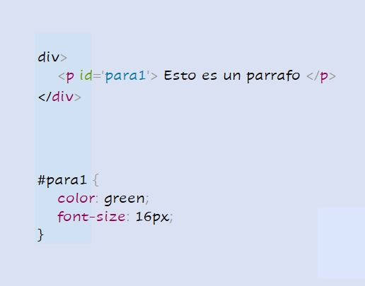
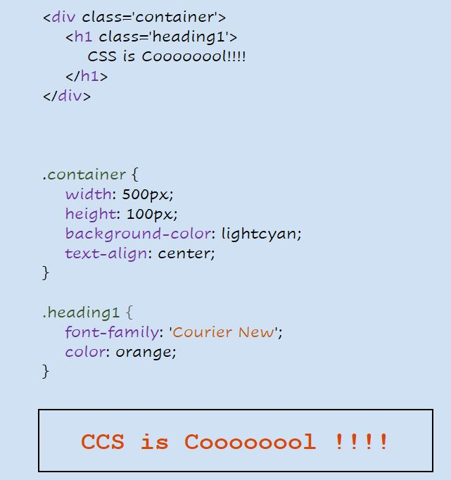

3. Identificación
Al igual que las clases, también podemos usar ID para seleccionar elementos HTML y aplicarles estilo. La única diferencia entre clase e ID es que se puede asignar una ID a un solo elemento HTML.
El ejemplo anterior muestra cómo asignamos una ID al elemento de párrafo y luego usamos el selector de ID en la hoja de estilo para seleccionar el párrafo y aplicarle el estilo.
Fuentes y colores
CSS nos proporciona literalmente cientos de opciones para jugar con fuentes y colores y hacer que nuestros elementos HTML se vean bonitos. Podemos elegir entre dos tipos de nombres de familias de fuentes:
1. Familia genérica: un grupo de familias de fuentes con un aspecto similar (como 'Serif' o 'Monospace')
2. Familia de fuentes: una familia de fuentes específica (como "Times New Roman" o "Arial")
Para los colores, podemos usar nombres de colores predefinidos o valores RGB, HEX, HSL, RGBA, HSLA.
